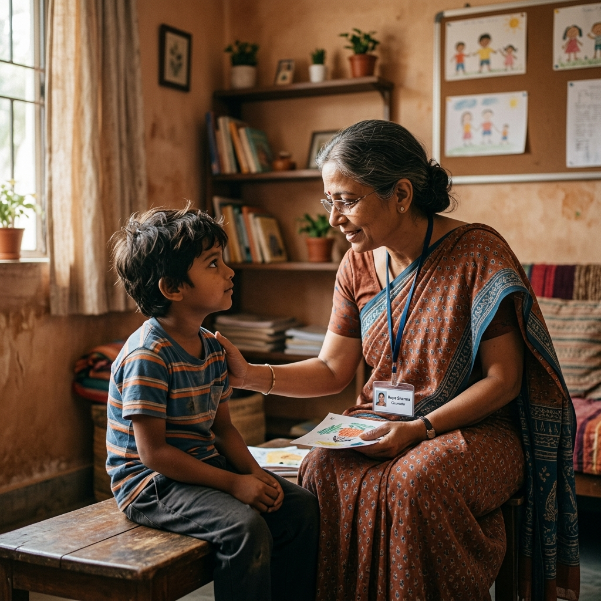

Child sexual abuse thrives in silence. Breaking that silence is our mission.
Child sexual abuse remains one of India's most under-reported crimes. According to the Ministry of Women and Child Development, over 53% of children have experienced some form of sexual abuse — yet the vast majority suffers in silence, conditioned by shame, fear, and misplaced guilt.
The POCSO Act of 2012 was a landmark step — but awareness remains critically low in rural and semi-urban communities. Children cannot protect themselves from what they cannot name.
In Punjab alone, thousands of cases go unreported each year. In Ludhiana — one of the state's most populous districts — Ek Awaj has been working since 2018 to change this reality, one school, one family, one community at a time.

The Protection of Children from Sexual Offences Act — your child's legal shield.
Any person under the age of 18 years is protected under POCSO, regardless of gender.
Penetrative & non-penetrative assault, sexual harassment, and use of children for pornography are all cognizable offences.
Under Section 19, every person who knows of an offence is legally obligated to report it. Failure to do so is punishable by law.
POCSO mandates special courts, in-camera proceedings, and child-friendly environments to protect survivors from re-traumatisation.
Convictions carry a minimum of 3 years imprisonment, rising to life imprisonment for aggravated offences.
Call Childline 1098, contact your nearest police station, or reach us directly at +91-7888801753. We will guide you.
Dangerous misconceptions protect abusers. Truth protects children.
"Strangers are the biggest threat to children."
Over 90% of perpetrators are known to the child — family members, neighbours, teachers, or family friends.
"Children make up stories about abuse."
False allegations of child sexual abuse are exceedingly rare. When a child discloses, always believe them first.
"Talking about it will plant ideas in children's heads."
Age-appropriate education about body safety is the single most effective prevention tool available to parents and educators.
"This only happens in poor or uneducated families."
Child sexual abuse occurs across all socioeconomic classes, religions, and education levels. No family is immune.
" Children cannot protect themselves from what they cannot name.
Name it. Know it. Stop it. "